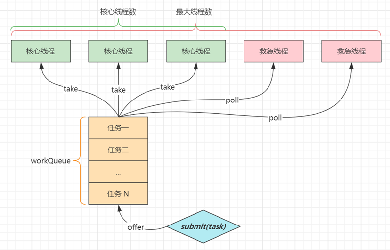
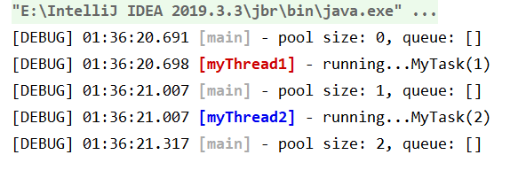
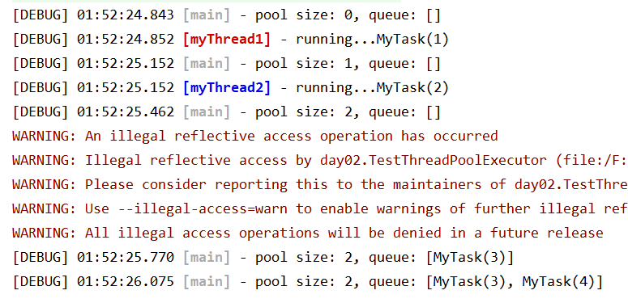
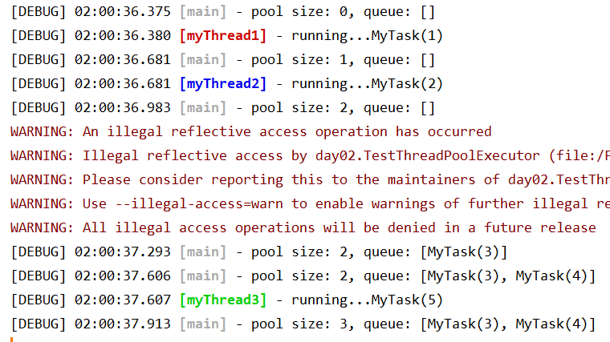
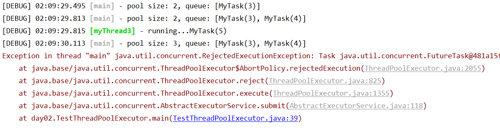
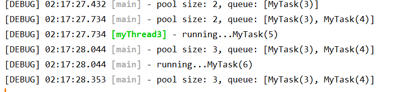
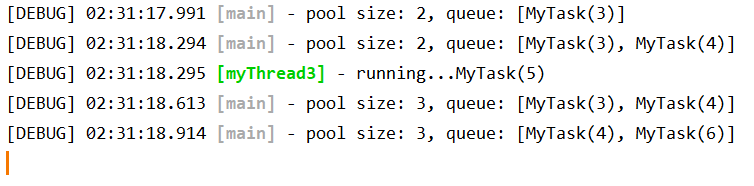

线程池最容易被误解的一点是：它不是一个"装线程的集合"，而是一套任务调度规则。你把任务丢进去，它决定现在跑、排队、加开线程，还是直接拒绝。
规则不复杂，但顺序很关键。很多人以为线程池会先把线程扩到最大，再排队；实际正好相反——先占满核心线程，再进队列，队列满了才加开临时线程。这一条没搞清楚，参数就会配错。
为什么需要线程池
在大部分 JVM 里，Java 用户线程和操作系统内核线程是 1:1 的。创建一个线程不是 new 一个对象那么简单，背后要做内核调用；频繁创建、销毁线程，开销很实在。
线程池解决两件事：
- 复用线程：线程用完不销毁，回到池里等下一个任务，降低创建和回收的频率。
- 统一管理：线程名、数量、状态、队列长度、已完成任务数都能集中控制，避免代码里到处
new Thread()把资源打满。
原文还有一句很实在的提醒：不要用 Executors 直接创建线程池。阿里巴巴开发手册也明确写了这一条。原因不是 Executors 有 bug，而是它把关键参数藏起来了，尤其是无界队列和无上限线程数，很容易在流量上来时把内存或线程数打爆。
先记住这条任务流水线
submit(task)
│
├─ 核心线程还没满？ ── 是 ──▶ 创建核心线程，立刻执行
│
├─ 核心满了 ──▶ 放进 workQueue 排队
│
├─ 队列也满了 ──▶ 创建临时线程（最多到 maximumPoolSize）
│
└─ 连最大线程数也满了 ──▶ 触发拒绝策略 handler一句话记忆：核心 → 队列 → 扩容 → 拒绝。
所以 maximumPoolSize 不是"线程池一上来就能开到这么大"，而是"队列满了以后，最多还能临时加多少"。如果队列是无界的，队列永远满不了，最大线程数就永远用不上。

怎么看这张图：顺着箭头走就是任务流向 —— 任务先进 workQueue，核心线程用 take() 从队列里拿；核心线程占满后新任务留在队列等着；只有队列满了，救急线程才用 poll() 越过队列直接取任务。所以图里"救急线程"的箭头是从队列旁边插进去的，不是排在队尾。
ThreadPoolExecutor 和 ThreadPoolTaskExecutor 别搞混
ThreadPoolExecutor：JUC 包里的原版，7 个参数自己配，最可控。ThreadPoolTaskExecutor：Spring 对它的一层封装，主要目的是让线程池能注册成 Bean，交给 Spring 管理生命周期，避免每个业务方各自乱建池。核心逻辑仍然是ThreadPoolExecutor在跑。
日常写业务，如果项目已经用 Spring，用 ThreadPoolTaskExecutor 做 Bean 化配置没问题；但参数含义、执行顺序、拒绝策略，还是下面这套。
7 个核心参数
| 参数 | 大白话 | 关键点 |
|---|---|---|
corePoolSize | 常驻窗口数量 | 池里长期保留的核心线程数 |
maximumPoolSize | 最多能开多少个窗口 | 核心线程 + 临时线程的上限，必须 ≥ core |
keepAliveTime | 临时窗口闲多久就撤 | 默认只作用于非核心线程；核心线程要配合 allowCoreThreadTimeOut(true) |
unit | 时间单位 | 和 keepAliveTime 搭配，如秒、毫秒 |
workQueue | 等候区 | 核心线程忙时任务排这里；有界队列才能触发扩容和拒绝 |
threadFactory | 线程工厂 | 建议自定义线程名，排查问题时能一眼看出是哪个池 |
handler | 拒绝策略 | 队列和线程都满时怎么办 |
几个容易忽略的约束：
corePoolSize不能大于maximumPoolSize，否则构造时直接抛IllegalArgumentException。keepAliveTime = 0表示临时线程一空闲就回收；如果任务本身很短，临时线程可能刚创建就退出。- 核心线程默认不会被回收。想让核心线程也超时，调用
allowCoreThreadTimeOut(true)。 workQueue的选择直接决定线程池行为：ArrayBlockingQueue有界，LinkedBlockingQueue默认近似无界，SynchronousQueue不存储任务、直接交给线程。
用一段代码把参数跑一遍
下面这段代码沿用原文的配置：核心 2、最大 3、队列容量 2、拒绝策略 AbortPolicy。原文用 submit 提交，再反射从 FutureTask 里取任务名；这里改用 execute，队列里直接就是 MyTask，打印出来更直观，代码也更短、可直接运行。
import java.util.concurrent.ArrayBlockingQueue;
import java.util.concurrent.BlockingQueue;
import java.util.concurrent.RejectedExecutionException;
import java.util.concurrent.ThreadPoolExecutor;
import java.util.concurrent.TimeUnit;
import java.util.concurrent.atomic.AtomicInteger;
public class ThreadPoolDemo {
public static void main(String[] args) throws Exception {
AtomicInteger seq = new AtomicInteger(1);
ArrayBlockingQueue<Runnable> queue = new ArrayBlockingQueue<>(2);
ThreadPoolExecutor pool = new ThreadPoolExecutor(
2, // corePoolSize
3, // maximumPoolSize
0L, // keepAliveTime
TimeUnit.MILLISECONDS, // unit
queue, // workQueue，容量 2
r -> new Thread(r, "myThread" + seq.getAndIncrement()),
new ThreadPoolExecutor.AbortPolicy()
);
show("初始", pool, queue);
pool.execute(new MyTask("1", 3_600_000)); // 占住一个核心线程 1 小时
show("加入任务1", pool, queue);
pool.execute(new MyTask("2", 3_600_000)); // 占住第二个核心线程
show("加入任务2", pool, queue);
pool.execute(new MyTask("3")); // 核心满了，进队列
show("加入任务3", pool, queue);
pool.execute(new MyTask("4")); // 队列第二个位置
show("加入任务4", pool, queue);
pool.execute(new MyTask("5", 3_600_000)); // 队列满了，创建临时线程
show("加入任务5", pool, queue);
try {
pool.execute(new MyTask("6")); // 最大线程也满了，触发拒绝
show("加入任务6", pool, queue);
} catch (RejectedExecutionException e) {
System.out.println("任务6被拒绝: " + e.getClass().getSimpleName());
}
pool.shutdownNow();
}
private static void show(String stage, ThreadPoolExecutor pool,
BlockingQueue<Runnable> queue) throws InterruptedException {
Thread.sleep(300);
System.out.printf("%s -> poolSize=%d, active=%d, queueSize=%d, queue=%s, completed=%d%n",
stage,
pool.getPoolSize(),
pool.getActiveCount(),
queue.size(),
queue,
pool.getCompletedTaskCount());
}
static class MyTask implements Runnable {
private final String name;
private final long duration;
MyTask(String name) {
this(name, 0);
}
MyTask(String name, long duration) {
this.name = name;
this.duration = duration;
}
@Override
public void run() {
System.out.println(Thread.currentThread().getName() + " running " + this);
try {
Thread.sleep(duration);
} catch (InterruptedException e) {
Thread.currentThread().interrupt();
}
}
@Override
public String toString() {
return "MyTask(" + name + ")";
}
}
}逐步看状态变化
| 步骤 | poolSize | 队列 | 发生了什么 |
|---|---|---|---|
| 初始 | 0 | 空 | 线程按需创建，不是一构造就开满 |
| 加入 1 | 1 | 空 | 创建第 1 个核心线程 |
| 加入 2 | 2 | 空 | 创建第 2 个核心线程，核心已满 |
| 加入 3 | 2 | [MyTask(3)] | 核心满了，任务 3 进队列 |
| 加入 4 | 2 | [MyTask(3), MyTask(4)] | 队列容量 2，已满 |
| 加入 5 | 3 | [MyTask(3), MyTask(4)] | 队列满了，创建 1 个临时线程执行任务 5 |
| 加入 6 | 3 | [MyTask(3), MyTask(4)] | 最大线程 3 已满，AbortPolicy 抛异常 |
下面几张运行结果截图来自原文，控制台时间、线程名以原文为准；本文示例改用execute后，队列里会直接显示MyTask(...)，状态含义相同。

怎么看这张图：[main] 开头的行是主线程每隔 300 毫秒打印的一次池状态，myThread1、myThread2 是真正干活的工作线程。
pool size: 0, queue: []：线程池刚new出来时一个线程都没有，核心线程是"来任务才创建"的懒加载，不是构造时开满。[myThread1] running...MyTask(1)紧跟pool size: 1：任务 1 来了，才创建第 1 个核心线程。[myThread2] running...MyTask(2)紧跟pool size: 2：任务 2 来了，创建第 2 个核心线程。- 三行
queue: []全程为空：任务 1、2 直接被核心线程接走了，压根不用排队。 - 任务 1、2 各睡 1 小时，所以
running之后不会有"跑完"的日志；池子稳定停在 2，没超过corePoolSize=2。

怎么看这张图：前 5 行和上一张一模一样（0 → 1 → 2），说明是同一个程序接着往下跑。
- 中间几行
WARNING: An illegal reflective access operation has occurred是 JDK 9+ 的模块化警告：原文为了打印队列里的任务名，用反射读了FutureTask的私有字段，新 JDK 会提示"以后要禁止这种反射"。它只是警告，不影响运行结果；本文示例改用execute后就不会出现。 pool size: 2, queue: [MyTask(3)]：核心线程已满，任务 3 没有开新线程，而是进队列。pool size: 2, queue: [MyTask(3), MyTask(4)]：任务 4 也进队列，队列容量 2 到这里刚好满。- 两次
pool size都是 2 —— 这是整条流水线最容易被忽略的一步：队列没满之前，线程数不会涨。

怎么看这张图：前面 queue: [MyTask(3), MyTask(4)] 出现时，队列已经满了。
[myThread3] running...MyTask(5)：任务 5 没有排到 3、4 后面，而是新开了第 3 个线程直接执行。- 最后
pool size: 3：达到maximumPoolSize。救急线程数 = 最大 3 − 核心 2 = 1，只有这一根。 queue仍是[MyTask(3), MyTask(4)]：任务 5 没进队列，说明扩容优先于排队。- 任务 3、4 此时还卡在队列里，要等核心线程空出来（1 小时后）才会被执行。
所以判断顺序一句话：先看 pool size 涨没涨，再看 queue 满没满 —— 池子涨之前，队列一定已经满了。
4 种拒绝策略
| 策略 | 行为 | 适合场景 | 风险 |
|---|---|---|---|
AbortPolicy | 抛 RejectedExecutionException | 不能丢任务的场景，让调用方知道 | 没捕获异常会中断提交逻辑 |
CallerRunsPolicy | 让提交任务的线程自己跑 | 需要背压、允许变慢 | 会阻塞调用线程，可能拖慢主流程 |
DiscardPolicy | 静默丢弃新任务 | 可丢的日志、埋点 | 没有任何通知，容易查不到 |
DiscardOldestPolicy | 丢掉队列里最老的任务，再重试提交 | 只关心最新数据的场景 | 老任务被无声丢弃，可能丢关键请求 |
原文里的演示很直观：
- 改成
CallerRunsPolicy：任务 6 交给提交任务的线程执行，所以能看到main线程在跑任务 6。 - 改成
DiscardPolicy：任务 6 直接消失，不抛异常，也不执行。原文没有给这个策略单独放截图，因为它连日志都不会留下。 - 改成
DiscardOldestPolicy：队列里的任务 3 被挤掉，任务 6 入队，任务 4 变成队首。

怎么看这张图：前 4 行还是"3、4 排队，5 由 myThread3 跑"，和上一张完全一致。
pool size: 3, queue: [MyTask(3), MyTask(4)]：核心 2 + 救急 1 全忙，队列 2 个位置也满，四个出口全堵死。- 下一行就是
Exception in thread "main" java.util.concurrent.RejectedExecutionException：任务 6 被拒绝。 - 堆栈从下往上读最清楚：
main→submit→execute→reject→AbortPolicy.rejectedExecution，最后一步就是拒绝策略亲自抛的异常。 - 关键细节：异常抛在 main 线程，不在池里的线程。外层不
try-catch，提交任务的循环会直接中断，后面本该提交的任务全都不执行了。 - 末尾那段
Task ...@481a15f rejected from ...ThreadPoolExecutor@...只是说明"哪个任务被哪个池拒了"，对定位没太大用。

怎么看这张图：前 4 行同样不变。
[main] running...MyTask(6)：任务 6 由 main 线程自己执行。因为 main 就是调用submit的那个线程，CallerRunsPolicy的规则是"谁提交的谁自己跑"。- 前后两条
pool size: 3, queue: [MyTask(3), MyTask(4)]完全没变：既没加线程，也没进队列，任务是被"退回"给调用方的。 - 任务 6 没设执行时长，所以
running之后立刻结束，不会看到它睡很久。 - 代价在图上不明显但很关键：main 在跑任务 6 的这段时间无法提交新任务，这就是背压 —— 上游被自动降速，而不是把任务堆在内存里。

怎么看这张图：比对最后两行就行。
pool size: 3, queue: [MyTask(3), MyTask(4)]：队列满，任务 6 到来。- 最后一行变成
queue: [MyTask(4), MyTask(6)]：队首的MyTask(3)被踢出队列，任务 6 补到队尾。 pool size一直是 3，队列长度还是 2：总量没变，是"换人"，不是"扩容"。- 全程没有异常、没有日志，任务 3 就这么无声无息地消失 —— 所以这个策略在生产上最危险，丢的是排在最前面、等了最久的那个任务。
- 如果换成
DiscardPolicy，控制台会和这张图一样安静，区别只是队列仍然是[MyTask(3), MyTask(4)]，消失的是新来的任务 6。
生产上，支付、订单、扣减库存这类任务不要用后两种"静默丢弃"策略；至少用 AbortPolicy 让上游感知，或者用 CallerRunsPolicy 做背压。
四个常见坑
1. 用了无界队列，最大线程数形同虚设
Executors.newFixedThreadPool(n) 内部用的是 LinkedBlockingQueue，默认容量接近无界。核心线程满了以后，任务一直往队列里堆，队列永远满不了，maximumPoolSize 就永远用不上。
结果就是：线程数看起来很正常，任务却越积越多，最后 OutOfMemoryError。所以生产上更推荐自己 new ThreadPoolExecutor(...)，显式指定有界队列和拒绝策略。
2. submit 会把异常吞掉
上面的示例用的是 execute，任务异常会直接冒出来。如果你用 submit，它返回 Future，任务里抛出的异常会被包进 Future，不调用 future.get() 就看不到。表现就是"任务没执行成功，但日志里什么都没有"。
要么用 execute 提交不需要返回值的任务，让异常直接冒出来；要么保留 Future 并在合适的地方 get()，同时处理 ExecutionException。
3. shutdown 和 shutdownNow 不是一回事
shutdown()：不再接新任务，已提交的任务继续执行完。shutdownNow()：不再接新任务，尝试中断正在执行的任务，并返回队列里没跑的任务。
shutdownNow() 不保证一定能立刻停下，因为任务要不要响应中断，取决于它自己有没有检查中断状态。不管用哪个，线程池用完都要关，否则可能阻止 JVM 退出。
4. 快任务和慢任务混在一个池里
一个池同时跑"查缓存"和"调第三方接口"，慢任务会把核心线程占满，快任务全在队列里排队。表面看是线程池不够大，实际是任务类型混了。
按任务类型拆池：快慢分离、CPU 密集和 IO 密集分离；每个池单独配置队列和拒绝策略，监控也更清晰。
线程数到底设多少
没有万能公式，但可以先给一个起点，再压测修正：
- CPU 密集型：核心数 + 1。线程太多只会增加上下文切换。
- IO 密集型：常见起点是核心数 × 2；更细一点用
N × 目标利用率 × (1 + 等待时间 / 计算时间)。 - 混合型：先拆开，别用一个池硬扛。
N 取 Runtime.getRuntime().availableProcessors()。但注意容器里要结合 CPU limit 看，不能只看物理机核数。最终值一定来自压测和监控，不是抄来的。
生产配置清单
上线前至少检查这几项：
- 用
ThreadPoolExecutor显式创建，7 个参数都写清楚； - 队列必须有界，容量按峰值和内存估算；
- 拒绝策略按业务选，不能默认"丢了算了"；
- 自定义
ThreadFactory，线程名带业务前缀和序号； - 监控
poolSize、activeCount、queue.size()、completedTaskCount、拒绝次数； - 注册
shutdown钩子，应用下线时优雅关闭； - 不同任务类型拆池，避免慢任务拖死快任务。
小结
把线程池记成一条流水线就够了：
- 核心线程先上；
- 核心满了进队列；
- 队列满了才扩到最大线程数；
- 都满了走拒绝策略。
7 个参数里，真正决定行为的是 corePoolSize、maximumPoolSize、workQueue 和 handler 这四个。把它们配成有界、可控、可观测，线程池才不会从"性能工具"变成"故障源头"。
参考
- 原文：线程池（LZH_BLOG，2022-10-14）
- 原文示例代码：
ThreadPoolExecutor2/3/0/队列容量 2 的任务提交与四种拒绝策略演示 - JDK API：
java.util.concurrent.ThreadPoolExecutor、RejectedExecutionHandler、Executors - 阿里巴巴《Java 开发手册》：线程池不允许使用
Executors创建，应通过ThreadPoolExecutor明确参数